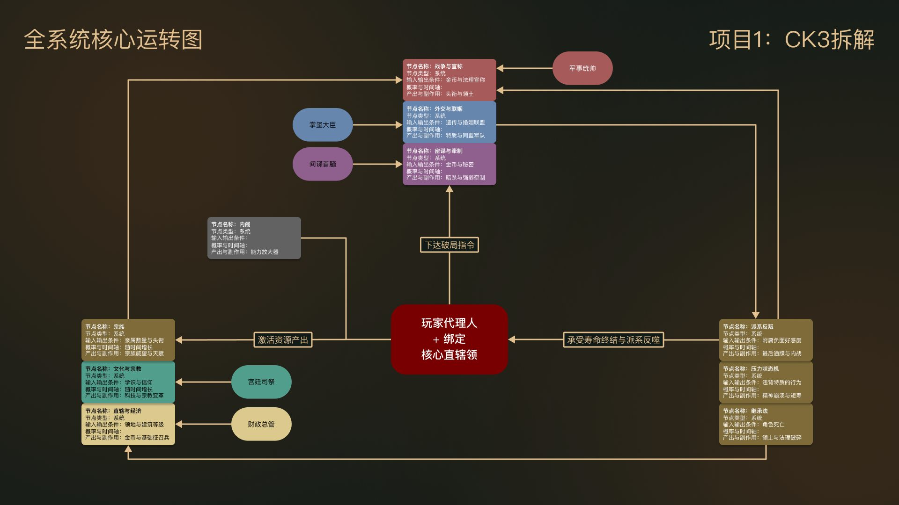

作品集
重点项目
CK3 系统拆解
把《十字军之王 3》的法理、经济、密谋和压力系统逐个拆开，用统一的图例画出整套系统怎么运转。这是我花时间最多的一份东西，也最能说明我做系统的思路。
看拆解 →
监制台 AIworkflow-GameStudio
自己写的 Electron 工具，用来管 AI agent 的生产流水线：文件夹就是工单状态，改名就是流转。制作人只管放行、拍板、终审三件事。源码开源。
看介绍 →排期工具
给自己在《归唐》的 PM 工作写的甘特图排期工具：拖拽排期、职能配色、关键路径与冲突检测、一键导出 PNG 同步排期。已进入主管 PM 试用，源码开源。
看介绍 · 可在线试用 →ticket-hub 工单中台
人与 AI 协作的工单管理中台：Markdown 工单是唯一事实源，树形 / 看板 / 甘特三视图，派发-回流状态机，含 24 项单元测试并打包成免安装应用。源码开源。
看介绍 · 可在线试用 →Monsterpedia
四人团队的像素风侦探游戏，我做系统策划和主程，兼管排期和例会。战斗不动手，靠证据在对话里击破嫌疑人的心理防线。中途主导架构重构，配一条新线索从 30 分钟降到 20 分钟。
看复盘 →Graves of Sailors
海战桌游，我做主策和数值。想在桌面上还原战争迷雾：棋子坐标公开、身份隐藏，靠观察对手的走法反推配置。数值用 Excel 建模，靠多轮试玩把平衡调出来。
看复盘 →Dualing Drivers
双人坦克对抗原型，五人团队。我写了两套手柄操控——街机映射和双摇杆拟真履带，还做了一个能存读 JSON 的关卡编辑器。
看复盘 →档案

FIG.01 — PORTRAIT
苏省
System Design & Production
我是苏省，罗彻斯特理工学院（RIT）游戏设计专业学生，预计 2027 年毕业，目前在投的方向是系统策划和项目管理。
我主要使用 Unity 开发，熟悉 ScriptableObject 数据结构和基础系统设计。在团队项目里我通常一人两职：做玩法系统设计，也管排期、例会和版本复盘。
我比较喜欢策略和模拟类游戏，比如《十字军之王》《环世界》《Kenshi》，它们处理系统结构和玩家决策空间的方式对我影响很大。我也在试着设计自己的策略与 SLG 玩法系统。
我在网易雷火《归唐》项目组有两段实习。2025 年夏天做关卡策划，负责核心潜入关卡的白盒搭建与体验迭代，关卡原型被团队用于后续机制验证；2026 年 6 月起回到同一个组做项目管理实习生（进行中），以双周 Sprint 跟进 Boss、马匹、远程三条特性管线的需求拆解、排期与风险，对接十余名研发成员。为了解决复杂任务平铺导致的信息混乱，我自己写了一个排期管理工具，已进入主管 PM 试用。策划怎么想、管线怎么转，两边我都亲手摸过——这也是我现在同时投系统策划和项目管理的底气。
TOOLKIT // 核心技能
设计理念
PACING & FLOW
节奏与心流
我练过七年京剧和古琴，上过舞台，对人的情绪起伏和注意力变化比较敏感——知道什么时候该把节奏拉满，什么时候该放缓给人喘口气。做关卡我会把这套思路直接用上：潜入的高压、补给的缓冲、通关的释放，都提前想清楚。在网易雷火做潜入关卡时，就是靠调路线节奏、AI 巡逻频率和视野布局，解决了原关卡忽紧忽松、目标感弱的问题。
PRODUCTION
信息同步与推进
带过三个团队项目的排期之后我发现，多数协作问题源于信息不对齐，而不是能力不足——把每个系统节点的输入、输出、触发条件梳理清楚，程序和内容之间的返工就明显变少。在《归唐》做项目管理实习是同一件事的放大版：跟进特性组的管线，让需求变成可执行、可验证、能进版本的任务。按依赖排优先级、砍需求，是推进的常态，不是失败。
SYSTEM & DATA
系统与数值
P 社游戏玩了几千小时，也完整拆过《十字军之王 3》的底层架构，所以我做系统很看重逻辑闭环和数据支撑：先理清循环，再用 Excel 模拟或者搭个原型验证。Monsterpedia 的配置流程重构、Sailors 的胜率区间，都是反复测试抠出来的，不靠拍脑袋。
联系
想聊项目、聊系统设计，或者要一份简历，直接联系我：